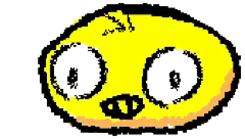

Creamos lo que sea. Resolvemos lo que venga.
Lo más reciente que salió del taller.
Las nueve áreas, con su precio y lo que incluye.
Cosas que puedes tocar, no capturas de pantalla.
Quién resuelve y cómo.
Ocho celdas: bienvenida, un trabajo, tres zonas y tres huecos para tu material. Las nueve áreas ya no están aquí: viven en Servicios, que es donde alguien llega cuando ya decidió que le interesa. Las celdas con hueco llevan un rótulo que dice qué foto necesitan y en qué medida. En escritorio aparece al acercar el cursor; en el teléfono está siempre.